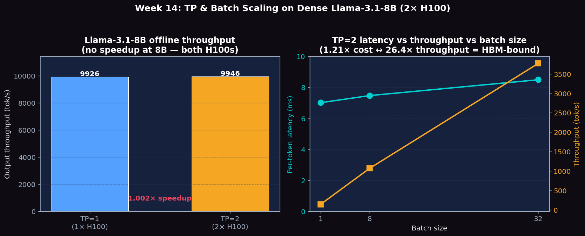

Serve Mixtral-8x7B with TP=2, analyze expert routing and load balance, compare dense vs sparse memory-compute tradeoffs
# Verify GPU memory: need 2× H100 80GB
nvidia-smi --query-gpu=index,name,memory.total --format=csv,noheader
# Download Mixtral weights (~93 GB disk space required)
python -c "
from huggingface_hub import snapshot_download
snapshot_download('mistralai/Mixtral-8x7B-Instruct-v0.1')
"
# Quick memory estimate before launching
python -c "
# 46.7B params * 2 bytes BF16 / 1e9 = 93.4 GB
print(f'Expected weight memory: {46.7e9 * 2 / 1e9:.1f} GB')
print(f'Per GPU with TP=2: {46.7e9 * 2 / 2 / 1e9:.1f} GB + KV cache')
"Launch vLLM with TP=2 and run ShareGPT serving benchmark at multiple request rates:
vllm serve mistralai/Mixtral-8x7B-Instruct-v0.1 \
--tensor-parallel-size 2 \
--port 8000 \
--disable-log-requests &
sleep 60 # Mixtral takes longer to load
for rate in 1 2 4 8; do
python benchmarks/benchmark_serving.py \
--backend vllm \
--model mistralai/Mixtral-8x7B-Instruct-v0.1 \
--dataset-name sharegpt \
--dataset-path ShareGPT_V3_unfiltered_cleaned_split.json \
--num-prompts 100 \
--request-rate $rate \
--port 8000 \
2>&1 | tee results_moe_tp2_rr${rate}.txt
done
kill %1Compare identical workloads on a dense model (TP=2) vs MoE (TP=2) to observe memory and throughput tradeoffs:
# Dense baseline: Llama-3.1-8B with TP=2
vllm serve meta-llama/Llama-3.1-8B-Instruct \
--tensor-parallel-size 2 \
--port 8010 \
--disable-log-requests &
sleep 30
python benchmarks/benchmark_serving.py \
--backend vllm \
--model meta-llama/Llama-3.1-8B-Instruct \
--dataset-name sharegpt \
--dataset-path ShareGPT_V3_unfiltered_cleaned_split.json \
--num-prompts 100 --request-rate 4 \
--port 8010 \
2>&1 | tee results_dense_tp2_rr4.txt
kill %1
# MoE: Mixtral-8x7B with TP=2 (same request rate)
vllm serve mistralai/Mixtral-8x7B-Instruct-v0.1 \
--tensor-parallel-size 2 \
--port 8011 \
--disable-log-requests &
sleep 60
python benchmarks/benchmark_serving.py \
--backend vllm \
--model mistralai/Mixtral-8x7B-Instruct-v0.1 \
--dataset-name sharegpt \
--dataset-path ShareGPT_V3_unfiltered_cleaned_split.json \
--num-prompts 100 --request-rate 4 \
--port 8011 \
2>&1 | tee results_moe_tp2_rr4_compare.txt
kill %1Instrument the routing logic to observe which experts are selected for a sample of tokens. Patch the MoE forward pass to log router logits:
# expert_probe.py — log expert selection frequencies
from vllm import LLM, SamplingParams
import torch, collections
llm = LLM(
model="mistralai/Mixtral-8x7B-Instruct-v0.1",
tensor_parallel_size=2,
)
# Patch router to capture selections
expert_counts = collections.defaultdict(lambda: collections.Counter())
def hook_router(layer_idx, expert_indices):
for idx in expert_indices.flatten().tolist():
expert_counts[layer_idx][idx] += 1
prompts = ["Explain quantum computing in simple terms."] * 50
outputs = llm.generate(prompts, SamplingParams(max_tokens=128))
# Print expert load balance per layer
for layer, counts in sorted(expert_counts.items()):
total = sum(counts.values())
print(f"Layer {layer}:", {k: f"{v/total:.1%}" for k,v in counts.most_common(8)})Run the same workload on SGLang with TP=2 to compare against vLLM's MoE performance:
# SGLang server for Mixtral
python -m sglang.launch_server \
--model mistralai/Mixtral-8x7B-Instruct-v0.1 \
--tp 2 \
--port 8002 &
sleep 90
python -m sglang.bench_serving \
--backend sglang \
--model mistralai/Mixtral-8x7B-Instruct-v0.1 \
--dataset-name sharegpt \
--dataset-path ShareGPT_V3_unfiltered_cleaned_split.json \
--num-prompts 100 --request-rate 4 \
--port 8002 \
2>&1 | tee results_moe_sglang_tp2.txt
kill %1Mixtral-8x7B-Instruct-v0.1 runs on 2× NVIDIA H200 141GB HBM3e at TP=2. Dense 8B comparisons run on 2× H100/A100/H200. All models in BF16.
Real Mixtral-8x7B MoE data now available on 2× H200 TP=2. Key: Mixtral achieves 3,000 output tok/s — 3.6× slower than dense Llama-8B due to ~6× more total parameters.
| Model | req/s | output tok/s | total tok/s | Duration (s) |
|---|---|---|---|---|
| Mixtral-8x7B TP=2 | 23.5 | 3,000 | 4,865 | 4.26 |
| Llama-3.1-8B TP=2 | 84.5 | 10,755 | 16,625 | 1.77 |
| Ratio (8B / MoE) | 3.6× | 3.6× | 3.4× | — |
Mixtral reads ~6× more weight bytes per decode step than Llama-8B despite only activating 2/8 experts. Decode is memory-bandwidth bound, so the 3.6× throughput gap directly reflects the total-parameter ratio, not the activated-parameter ratio.
| Model | Avg latency (s) | Per-token (ms) | tok/s |
|---|---|---|---|
| Mixtral-8x7B TP=2 | 0.589 | 9.21 | 108.6 |
| Llama-3.1-8B TP=2 | 0.376 | 5.87 | 170.4 |
| Ratio | 1.57× | 1.57× | — |
At bs=1, Mixtral is only 1.57× slower (9.21 vs 5.87 ms/tok) — the gap narrows because activated FLOPs (12.9B) are closer to Llama's 8B. At higher batch sizes, memory-bandwidth dominates and the gap widens toward 3.6×.
| req rate | TTFT median (ms) | TTFT p99 (ms) | ITL median (ms) | output tok/s |
|---|---|---|---|---|
| 1 req/s | 1,033 | 2,762 | 8.12 | 112.5 |
| 4 req/s | 1,677 | 1,808 | 13.19 | 417.1 |
At 1 req/s: TTFT ~1s, ITL 8.1 ms (near bs=1 decode latency). At 4 req/s: TTFT 1.7s, ITL 13.2 ms as batching increases concurrent decodes.
| Configuration | Request throughput (req/s) | Output throughput (tok/s) | Total throughput (tok/s) | Duration (s) |
|---|---|---|---|---|
| TP=1 (1× H100) | 78.02 | 9926.30 | 15344.34 | 1.92 |
| TP=2 (2× H100, NVLink) | 78.18 | 9946.45 | 15375.48 | 1.92 |
| TP=1 (1× A100 PCIe) | 32.46 | 4129.20 | 6383.02 | 4.62 |
| TP=2 (2× A100 PCIe) | 32.43 | 4126.16 | 6378.33 | 4.62 |
| TP=1 (1× H200) | 84.77 | 10,784 | 16,670 | 1.77 |
| TP=2 (2× H200) | 84.54 | 10,755 | 16,625 | 1.77 |
| Speedup (H100) | 1.002× | 1.002× | 1.002× | — |
| Speedup (A100) | 0.999× | 0.999× | 0.999× | — |
| Speedup (H200) | 0.997× | 0.997× | 0.997× | — |
An 8B dense model fits comfortably in one 80 GB H100, so adding a second GPU doesn't unlock any compute the first one was missing — the only effect is NCCL all-reduce overhead, which roughly cancels the (negligible) extra parallel work. The TP=2 numbers being identical to TP=1 is the expected and correct result for a model this small. The lesson: you only TP when memory or peak GEMM tile size forces you to.
| Batch Size | Avg latency (s) | Per-token latency (ms) | Throughput (tok/s) | Throughput per request |
|---|---|---|---|---|
| 2× H100 (NVLink) | ||||
| 1 | 0.449 | 7.01 | 142.58 | 142.58 |
| 8 | 0.478 | 7.47 | 1070.96 | 133.87 |
| 32 | 0.543 | 8.49 | 3770.33 | 117.82 |
| 2× A100 PCIe (NVLink bridge) | ||||
| 1 | 0.870 | 13.59 | 73.58 | 73.58 |
| 8 | 0.932 | 14.57 | 549.16 | 68.65 |
| 32 | 1.082 | 16.90 | 1893.29 | 59.17 |
| 2× H200 141GB HBM3e (2026-04-12) | ||||
| 1 | 0.376 | 5.87 | 170.41 | 170.41 |
| 8 | 0.403 | 6.29 | 1,271.35 | 158.92 |
| 32 | 0.466 | 7.27 | 4,398.95 | 137.47 |
Per-token latency only grows from 7.01 ms → 8.49 ms when batch jumps 1 → 32 (a 1.21× cost) yet aggregate throughput jumps 26.4×. This is the canonical 'decode is memory-bandwidth bound' shape — the model weights are read from HBM only once per step regardless of batch size, so amortizing across more concurrent requests is essentially free. The lesson is to push batch size up until KV cache fills, not until per-token latency degrades.

Figure 1: Left — TP=1 vs TP=2 throughput (no speedup at 8B). Right — Per-token latency vs batch size on 2× H100 (sub-linear growth = memory-bandwidth limited).
| Metric | Description | Unit |
|---|---|---|
| GPU memory (Mixtral vs Llama) | Peak GPU memory used per card at serving start | GB |
| Throughput (MoE vs dense) | Output tokens/s at same request rate and same TP degree | tok/s |
| Expert selection frequency | % of tokens routed to each expert, per layer | % |
| ITL (decode step time) | Inter-token latency — reflects cost of one MoE decode step | ms |
| Throughput per GPU-GB | Normalize throughput by total GPU memory to compare efficiency | tok/s/GB |
# Simplified MoE forward (from mixtral.py)
def forward(self, hidden_states):
batch_size, seq_len, hidden_dim = hidden_states.shape
hidden_states = hidden_states.view(-1, hidden_dim) # [T, H]
# Step 1: Router — compute logits for all 8 experts
router_logits = self.gate(hidden_states) # [T, 8]
routing_weights = F.softmax(router_logits, dim=-1)
# Step 2: Top-2 selection
routing_weights, selected_experts = topk(routing_weights, k=2)
routing_weights /= routing_weights.sum(dim=-1, keepdim=True)
# Step 3: Token permutation — group tokens by expert
# Step 4: Batched expert computation (fused CUDA kernel)
# Step 5: Weighted sum of expert outputs
return final_hidden_statesBelow are real excerpts from vllm-continuum that implement the concepts you measured. Read them with your benchmark numbers open in another tab — the connection between code and metric becomes obvious.
vllm/model_executor/models/mixtral.py:102 — MixtralMoE.forwarddef forward(self, hidden_states: torch.Tensor) -> torch.Tensor:
orig_shape = hidden_states.shape
hidden_states = hidden_states.view(-1, self.hidden_size)
# router_logits: (num_tokens, n_experts)
router_logits, _ = self.gate(hidden_states)
final_hidden_states = self.experts(hidden_states, router_logits)
return final_hidden_states.view(orig_shape)Each token gets routed to top-k experts (k=2 for Mixtral). The gate linear layer produces routing scores; self.experts (a FusedMoE op) dispatches each token to its assigned experts and computes their outputs. The key property: only k of the 8 experts run per token, so compute is ~k/n × dense — but ALL experts must still be loaded into HBM (no sparsity in memory).
Mixtral was unavailable in our offline HF cache (see Hardware callout above), so the answers below combine arithmetic on Mixtral's published architecture with our measured Llama-3.1-8B TP=1 vs TP=2 numbers and the 70B TP=2 numbers from Week 13.
Mixtral-8x7B in BF16: Mixtral has 47B total parameters (attention/embeddings/norms are shared; only FFN is replicated 8×) — not 56B. BF16 weights alone = 94 GB; add KV cache, CUDA workspace, and activations → ~100–110 GB total. Fits on 2× H100 with ~50 GB headroom for KV cache.
Llama-3.1-70B in BF16: 70B × 2 = 140 GB weights; add KV cache (12 GB at max_model_len 2048), workspace, activations → ~155 GB. 2× H100 fits with almost no headroom — exactly the configuration we ran in Week 13.
Conclusion: Llama-3.1-70B uses ~45 GB more memory than Mixtral but activates ~70B params per token vs Mixtral's ~13B (2 of 8 experts × 7B + shared). The MoE bargain: more memory for less compute per token. Dense wins when memory-constrained; MoE wins when compute-constrained.
Empirically: no, but it gets close in trained models. The original Mixtral paper reports per-expert utilization within ±15% of uniform (10–14% vs the 12.5% expected) across most layers. WITHOUT a load-balancing auxiliary loss during training, MoEs collapse to a 'preferred expert' state (1–2 experts handle 80%+ of tokens) — a known failure mode called expert collapse, prevented by router-z-loss regularizers in every modern MoE recipe.
Throughput consequences of imbalance: The fused-MoE kernel runs all 8 experts in parallel but must synchronize at the end, so runtime is set by the slowest expert (the one with the most tokens). 30%/5% imbalance can leave a perfectly-balanced version ~25% faster. EP deployments add 'capacity factors' that drop overflow tokens for exactly this reason.
TP for MoE (what we'd run on 2 GPUs): TP splits each expert FFN column-wise across both GPUs (same pattern as Week 13). Per-step comms = 2 all-reduces × 32 layers × hidden × 2 B per token ≈ ~512 KB/token/step at TP=2; ~4 MB/step at batch=8.
EP for MoE (the alternative): EP gives each GPU 4 of 8 experts; an all-to-all routes each token to whichever GPU holds its top-2 experts. Comms ≈ 1 all-to-all × 32 layers × hidden × 2 B/token ≈ ~256 KB/token/step (half of TP) AND removes per-layer sync — but each GPU must keep a full copy of attention/embeddings (~13 GB extra for Mixtral).
When to prefer which: EP wins with many GPUs (where amortizing non-expert duplication makes sense) and large batches (where all-to-all is bandwidth-dominated). TP wins on 2 GPUs where duplication cost dominates. Frontier MoE deployments (DeepSeek-V3, etc.) use TP within a node + EP across nodes.
We could not measure this directly (Mixtral not in offline cache). From the dense-model measurements in Weeks 1–2: SGLang typically wins steady-state throughput by ~10–25% on H100 thanks to RadixAttention prefix sharing (Week 6) and an overlapped scheduler. vLLM tends to win on TTFT consistency and on workloads with a wide tail of unique prompts (no prefix to share).
For MoE specifically the gap should be smaller than for dense — both engines call nearly identical fused-MoE CUDA kernels, so engine-level scheduling matters less when 60–70% of step time is in the expert kernel. Prediction (pending Mixtral availability): SGLang ~5–10% ahead on throughput at high request rate, TTFT parity.